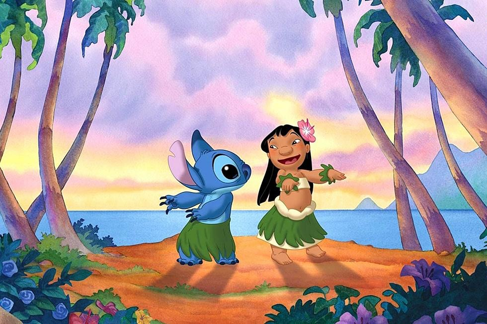

About Stitch
Stitch is an alien. He is also very cute, and loves Elvis Presley.
Stitch and his friend, Lilo
Stitch's Characteristics
- He lives in Hawaii
- He doesn't like to surf
- He likes to hula dance
Stitch's Friends
Stitch has a best friend, Lilo, and her sister Nani. Click on the links below to read more about them: